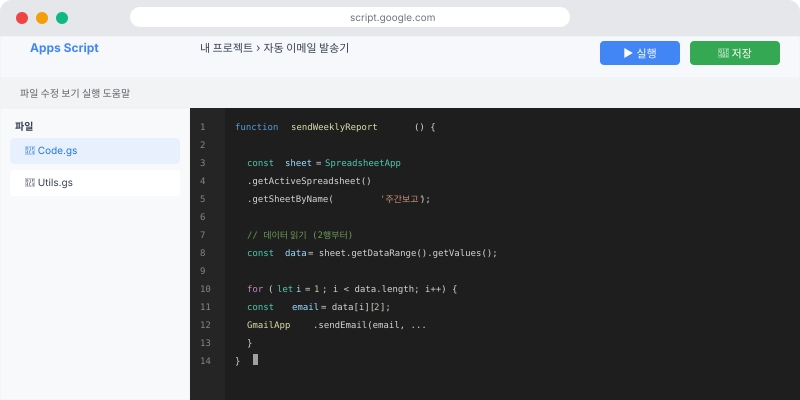
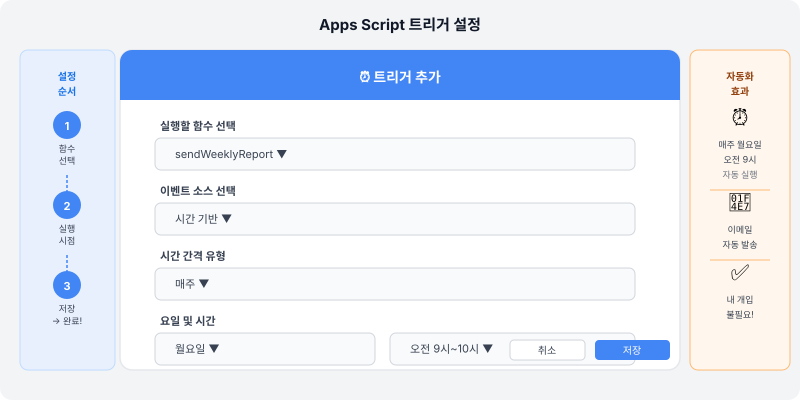

⚙️ "이 작업, 매주 수동으로 해야 하나요?"
매주 같은 형식의 보고서를 만들거나, 설문 응답을 정리하거나, 특정 조건이 되면 이메일을 보내야 하는 업무가 있으신가요? 이런 반복적인 Google 서비스 작업을 자동화하는 도구가 Google Apps Script예요.
Apps Script는 Google이 제공하는 자동화 도구인데, 코드를 직접 써야 해서 어렵게 느껴질 수 있어요. 하지만 이제 AI에게 코드를 대신 작성해달라고 하면 됩니다. 개념만 이해하면 AI가 실행 가능한 코드를 만들어줘요.
💡 Apps Script란? Google Sheets, Docs, Gmail, Calendar 등 Google 서비스를 자동화하는 프로그래밍 도구예요. JavaScript라는 언어로 작성하지만, AI에게 부탁하면 코드를 직접 작성하지 않아도 돼요.
📋 Apps Script로 할 수 있는 것들
📊 Sheets 자동화
- 특정 조건의 행 강조
- 데이터 자동 정리·분류
- 주간 보고서 자동 생성
📧 Gmail 자동화
- 특정 조건 시 자동 이메일 발송
- 설문 제출 시 확인 메일
- 마감일 임박 알림 이메일
📝 Forms 연동
- 설문 응답을 Sheets에 자동 정리
- 응답자에게 자동 이메일 전송
- 조건별 다른 응답 처리
🎯 Step 1. Apps Script 에디터 열기
- Google Sheets를 열기
- 상단 메뉴 → 확장 프로그램 → Apps Script 클릭
- 새 탭에서 Apps Script 에디터가 열림
- 여기에 코드를 붙여넣고 실행하면 돼요

🤖 Step 2. AI에게 코드 요청하기
직접 코드를 쓸 필요 없어요. Claude나 Gemini에게 이렇게 요청하세요:
예시 요청 1 — 이메일 자동 발송:
"Google Apps Script 코드를 만들어줘.
Google Sheets에 데이터가 추가될 때마다
B열의 이메일 주소로 자동으로 확인 이메일을 보내고 싶어.
이메일 내용은 'A열의 이름님, 신청이 완료되었습니다.'야.
완전히 복사해서 바로 쓸 수 있는 코드로 줘."
"Google Apps Script 코드를 만들어줘.
Google Sheets에 데이터가 추가될 때마다
B열의 이메일 주소로 자동으로 확인 이메일을 보내고 싶어.
이메일 내용은 'A열의 이름님, 신청이 완료되었습니다.'야.
완전히 복사해서 바로 쓸 수 있는 코드로 줘."
예시 요청 2 — 주간 보고서 자동화:
"Google Apps Script 코드를 만들어줘.
매주 월요일 오전 9시에 자동으로 실행되는 스크립트야.
Google Sheets의 '판매 데이터' 시트에서 지난 주 데이터를 읽어서
총계와 상위 3개 항목을 정리해 담당자 이메일로 요약 보고서를 보내줘."
"Google Apps Script 코드를 만들어줘.
매주 월요일 오전 9시에 자동으로 실행되는 스크립트야.
Google Sheets의 '판매 데이터' 시트에서 지난 주 데이터를 읽어서
총계와 상위 3개 항목을 정리해 담당자 이메일로 요약 보고서를 보내줘."
▶️ Step 3. 코드 붙여넣고 실행하기
- AI가 준 코드를 전체 복사
- Apps Script 에디터의 기존 내용 삭제 후 붙여넣기
- 💾 저장 버튼 클릭 (또는 Ctrl+S)
- ▶️ 실행 버튼 클릭
- 처음 실행 시 권한 승인 팝업 → "허용" 클릭
- 실행 완료 확인!

⚠️ 권한 승인 팝업이 뜰 때: "Google이 이 앱을 확인하지 않았습니다"라는 경고가 나올 수 있어요. 직접 작성한 내 코드이므로 "Advanced → Go to [스크립트명]" → "Allow"를 클릭해도 안전해요.
⏰ Step 4. 자동 실행 설정하기 (트리거)
코드를 매번 직접 실행하는 게 아니라, 특정 시간이나 조건에 자동으로 실행되게 할 수 있어요.
- Apps Script 에디터 왼쪽 메뉴에서 ⏰ "트리거" 클릭
- "+ 트리거 추가" 버튼 클릭
- 실행할 함수 선택 → 실행 조건 설정
- 조건 예시: "매주 월요일 오전 8~9시", "스프레드시트가 수정될 때"
- 저장!
💡 오류가 나면? 오류 메시지를 그대로 복사해서 Claude에게 "이 오류가 났어. 어떻게 고쳐야 해?"라고 물어보세요. 대부분의 오류는 AI가 바로 해결해줄 수 있어요.
🚀 실전 활용 아이디어
- 신청 자동 처리: 교육 신청 폼 제출 시 자동 확인 이메일 + 명단 시트 추가
- 마감 알림: 스프레드시트에서 마감일이 3일 남은 항목 자동 이메일 알림
- 주간 현황 보고: 매주 특정 시트 데이터를 요약해서 팀장에게 자동 보고
- 데이터 백업: 매일 자정에 중요 시트를 새 탭으로 자동 복사